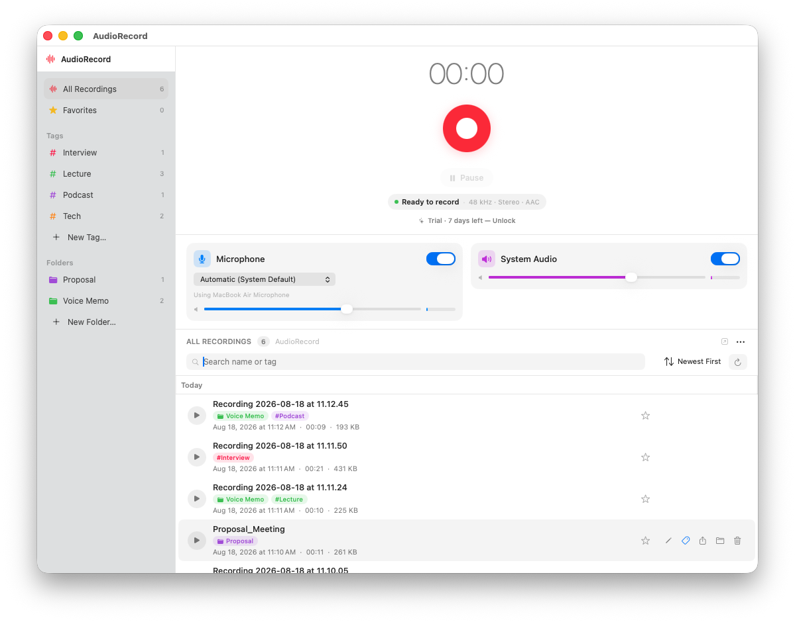

Your microphone and everything playing on your Mac — mixed into one file.
AudioRecord is a Mac audio recorder that captures system audio and your microphone at the same time, into a single file. Record online meetings with your commentary on top, narrate over videos, or capture lectures and interviews — then balance your voice against the other source live, while recording. No account, no setup, nothing leaves your Mac.
Download on the Mac App StoreFree download · Full Version $8.99 (in-app purchase). Requires macOS 14 or later.
✓ Microphone + system audio in one file
✓ Balance each source live while recording
✓ Global ⌘⇧R hotkey — record from any app
✓ WAV (lossless) or M4A, per recording
✓ Nothing leaves your Mac — Data Not Collected
Most Mac tools record either your microphone or your screen — getting both your voice and the sound playing on your Mac into one clean file usually means virtual audio drivers, aggregate devices, and post-production syncing. AudioRecord does it directly: one click records the microphone and all system audio, mixed into a single WAV or M4A file.
Every recording lands in a searchable library with folders, color tags, and favorites. Rename, reorganize, and move files between folders — the library follows. Playback is instant, inside the app.
Built for people who record real things:
Recorded a meeting you want notes from? Its sibling app MeetingMint turns recordings into AI minutes — on-device.
Hit the global ⌘⇧R hotkey from any app, or start from the menu bar. Pause and resume anytime. A live equalizer shows both sources while you record.
Your voice against the meeting, music, or video — adjust the balance live, while recording. Mic selection follows your default input automatically, AirPods included.
Recordings land in a searchable library with folders and color tags. Favorite what you return to, move files between folders, and play back instantly — all inside the app.

macOS gives you the microphone easily, but internal audio — a Zoom call, a YouTube video, a Teams meeting — normally requires routing tools like virtual audio devices, or a separate screen recording you then strip audio from. Then you sync your mic track against it in an editor. It works; it is just not something you want to do every week.
AudioRecord captures both sources through Apple's ScreenCaptureKit and writes a single mixed file — with live balance control so the mix is right before you finish. Nothing to route, nothing to sync afterward.
Because system-audio capture uses ScreenCaptureKit, macOS asks once for Screen & System Audio Recording permission. The app walks you through it. That is the entire setup.
No account, no cloud, no upload. The App Store privacy label says Data Not Collected. Recordings stay in your library, on your Mac.
Download AudioRecord, press ⌘⇧R, and get both sources — your mic and your Mac — in one file.
Download on the Mac App Store